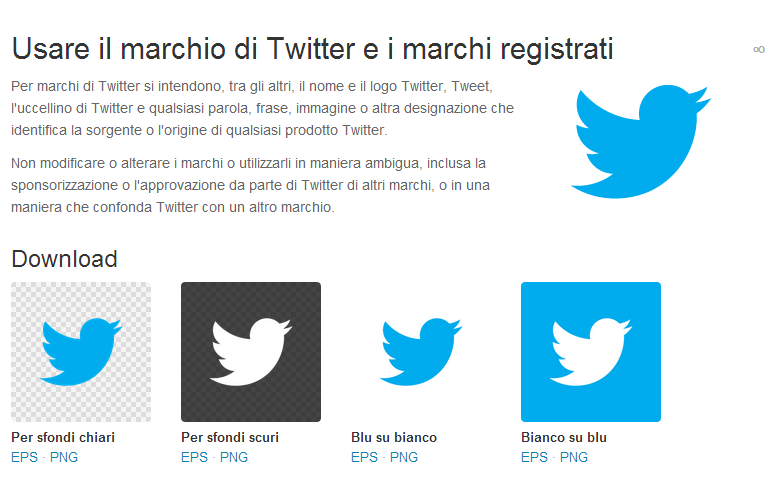

NoJPEG
Perchè non dovresti usare JPEG per il tuo logo
Hai mai pensato perchè i designer continuano a chiederti un file .eps?
Puoi usare la freccia → per avanzare, o cliccare sul triangolino blu la in basso.
Česky, Português, Português Brasileiro, English, Español, Francais, Català, Nederlands, Русский, Türkçe.
Quindi, abbiamo un logo...

Ed è un file JPEG.
Quindi ha uno sfondo bianco di default.
Non è fico.
Non vogliamo uno sfondo bianco

Cioè, e se volessimo usare il logo su uno sfondo di colore diverso?
Si, dobbiamo portarci dietro quell' area bianca.
Cosa succede invece, se usiamo un EPS?

Ta-da! Niente sfondo bianco.
Ma aspetta, c'è di più!
Cosa succede se allarghiamo un JPEG?
Diventa sfocato, ed orribile!
E cosa succede se allarghiamo un EPS?

Ta-da! Possiamo allargare un EPS all' infinito e rimarrà perfetto.
Un altro svantaggio dell' usare JPEG:

Siccome JPEG è un formato a compressione “lossy” puoi perdere qualità esportando il file.
“Ma non riesco a leggere file EPS!”
E'vero, eps è un formato per professionisti. Potresti non essere in grado di aprirlo.
(Ma fidati, ogni grafico, web designer e pubblicitario può.)
Quindi, cosa facciamo?
Saluta i...

File PNG. E' come un JPEG quindi puoi aprirlo ed usarlo in qualsiasi ambito
Ma senza lo sfondob bianco. Yay!
“Quindi mi stai dicendo che ho bisogno di 2 file?”
Si.
- Un file EPS per grafici, web designer ed altri professionisti
- Ed un file PNG per uso interno, presentazioni...
Non mi credi?
Chiediamo a twitter come lo fanno.
EPS e PNG. (Quei ragazzi sono capaci..)
E' un po' più tecnico di quanto questa presentazione possa far credere
Ma non pensarci per ora. Assicurati di avere un file vettoriale EPS ed un PNG con sfondo trasparente .
Divertiti!
Altre opzioni da considerare...
Puoi usare sia SVG che file PDF per gestire la tua identità online. Chiedi consigli ai tuoi designer di fiducia.
(Questo non significa che puoi inserire un JPEG in un file word e salvarlo come PDF.)
Credits
Brought to you by Larry Hynes.
Created with the only mighty Reveal.js.
Inspired by no-www.org.
With thanks to @joffley, @bjango, @jescalan, @arnauvp and Al Haigh for feedback and suggestions.
Why not get involved at GitHub?